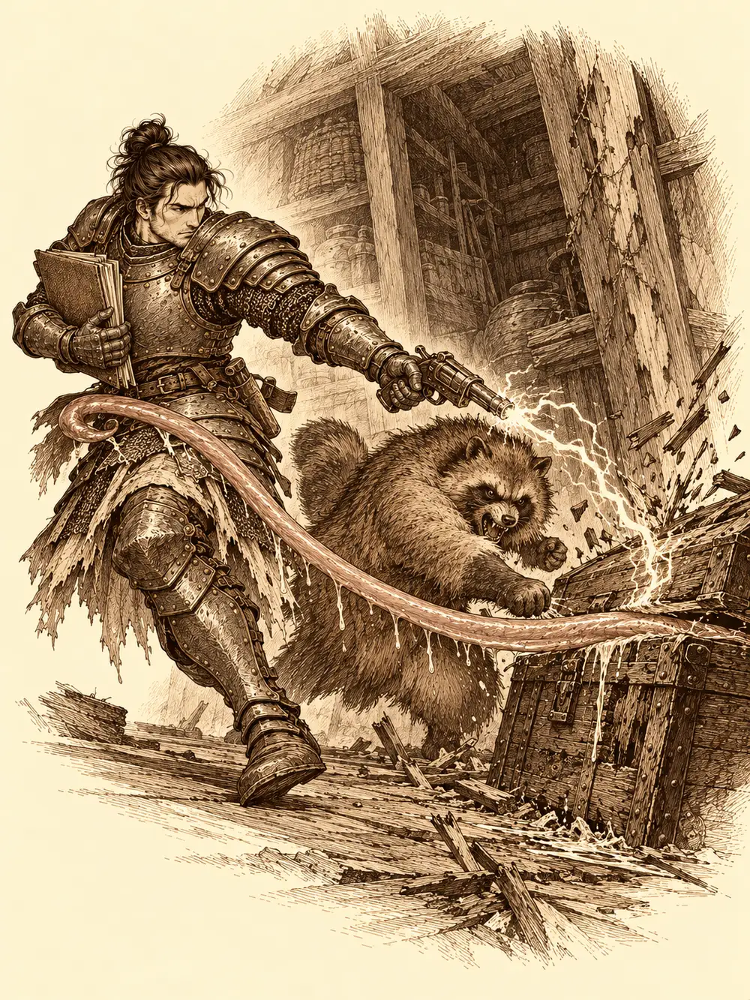

Capítulo 105
Esto está hecho un asco
Libro VII · La Reina Cuervo
Guxi tenía tinta hasta en las cejas. Había vuelto a la base de Sho después de muchos días encerrado en palacio, donde el shogun empeoraba y Rua cargaba con todo, y su forma de descansar consistía en sentarse a la mesa de los cazadores con otro montón de papeles. Shizuka le había traído a los dos nuevos para que les arreglara el ingreso de una vez.
Caniza creía que ya era cazador. No lo era. No tenía collar, nadie le había hecho firmar nada y, según le explicó el artífice con paciencia de funcionario, tampoco tenía por qué tener en las manos el libro de Ikari ni las plantas de palacio que había estado esperando para estudiar. En su ermita había seguido atendiendo a los vecinos que subían a pedirle consejo, y algunos bajaban más contentos de lo que esperaban. Firmó el contrato. Shizuka le colgó el collar al cuello con mucha ceremonia.
Después le tocó a Arwen. La niña no sabía escribir, así que Shizuka le cogió la mano, se la mojó en el tintero y le enseñó a estamparla. Arwen lo entendió enseguida y le gustó. Puso una huella, y otra, y otra, hasta que el texto del contrato desapareció bajo una mancha negra con forma de muchas patitas. Shizuka agitó el papel en el aire para secarlo. Guxi se lo quitó antes de que se partiera por la mitad.
Arwen se quedó quieta de pronto, tiesa como un perro de caza, mirando la puerta. Saltó por encima de la mesa a cuatro patas y se puso a arañar la madera y a ladrar.
Al otro lado había un hombre medio agachado.
"¿Vosotros sois los cazadores?".
"Desde hace unos diecisiete segundos", dijo Caniza, "aparentemente sí".
El desconocido se quitó la capucha y el embozo. Era un humano joven, de poco más de veinte años, con el pelo completamente blanco y unos ojos que lo miraban todo a la vez. Arwen le olfateaba los pies. Shizuka le dio la mano y le dijo que la jefa era ella.
"Me llamo Kurobane. Vengo del Sur. Me entrenaron en el Monasterio de las Sombras".
Guxi le sirvió té. Kurobane se sentó relajado y atento, como quien se sienta de espaldas a una pared. Un culto había arrasado su aldea, explicó; sabía que los cazadores preparaban algo contra Otakemaru y quería ayudar. Guxi le ofreció el contrato. El joven se remangó y les enseñó una marca en el antebrazo, un círculo atravesado por una flecha.
"Ya pertenezco a una orden. No voy a firmar. Pero no usaré mis habilidades contra ninguno de los vuestros".
Shizuka se le acercó con un puñado de caramelos medio derretidos que le había regalado Arwen y se los puso en la mano porque lo veía triste. Kurobane se comió uno.
Lo que sí podía dar eran caminos. Conocía rutas del Sur, pasos dobles y senderos ocultos, templos al final de las laderas que los sectarios no habían atacado o que usaban como campamento. Guxi le dio papel y él escribió durante un buen rato. Del otro lado de la Puerta Negra no sabía nada. Nadie sabía nada: ninguno de los que estaban allí la había cruzado. Era una puerta antigua, construida hacía siglos en la cordillera para cerrar el paso hacia las tierras de Otakemaru, que enloquecía a quien la miraba y que, por lo que contaban los informes, llevaba semanas reaccionando a lo que hacían los cazadores, abriéndose sin terminar de abrirse.
Shizuka soltó un chillido.
"¡Arwen, estás sucísima! Hueles fatal. Ven, que te vamos a bañar".
Arwen venía de su antigua cueva y se había caído en un charco que olía a lo que olía. La palabra baño la hizo salir disparada hacia el portal. Shizuka le pidió a todo el mundo que la ayudara, y Guxi miró el sintonizador antes de seguirla: estaba apuntando a Ukio.
La antigua base los recibió con un olor espeso a sake derramado. Era un corral de suelo pegajoso donde los tanuki rescatados se tambaleaban de un lado a otro, el polvo se acumulaba en los rincones y una bola de pelo andaba por el suelo empujando la porquería de un sitio a otro sin limpiar nada. Había costras en el suelo que nadie quiso identificar. Los pies hacían ruido al despegarse, como en una taberna a la hora de cerrar.
"Parece que habrá que limpiar aquí", dijo Guxi, y sacó la libreta.
Un perro le olisqueó los zapatos a Caniza y le dio las buenas tardes. Era el inugami de la base, el que construía los portales. Caniza se inclinó ante él con un respeto sincero; un yokai protector no se quedaba en cualquier sitio con cualquier gente. Luego se volvió hacia Guxi y le dijo que era la primera persona que encontraba entre los cazadores que no era un desequilibrado, un abusador de libros o las dos cosas. Shizuka quiso saber a qué venía eso, y él se lo explicó: lo habían recibido con un mandoble, nadie había movido un dedo y ahora se suponía que tenía que estar contento. La niña intentó otra vez obligarlo a obedecer con aquella voz que no era suya. Caniza la resistió de nuevo.
Arwen bajó de donde estuviera y le mordió los tobillos. Al poco la cara se le hinchó como a quien le pica una avispa.
"Por favor", dijo Caniza, con los labios gordos, "no me muerdas".
Y se puso a recoger.
Kurobane chasqueó los dedos y la sala donde se escondía Arwen se llenó de oscuridad, para que no pudiera ver por dónde escapar. Se oyó un golpe. Luego otro. Luego muchos: la niña se estaba estampando contra todo lo que había. Guxi desplegó dos de sus torretas y las cargó con agua. Los chorros encontraron a Arwen, que gritó que no quería agua y levantó del suelo un muro de piedra para protegerse. Un tanuki borracho tropezó con una de las torretas y la hizo girar, y el agua empezó a mojar a quien no tocaba.
Kurobane deshizo la oscuridad y se subió al muro de un salto para negociar.
"No habrá baño. Pero tienes que dejarte poner perfume".
"Eso huele mucho. Eso no gusta".
La niña intentó ablandarlo con un poco de magia y no le sirvió de nada. Retiró el muro de golpe para que se cayera y echó a correr. Caniza se lanzó a sujetar al visitante para que no se rompiera la crisma. En el revuelo, uno de los chorros alcanzó la cuna. El bebé de la base empezó a llorar. Lo sacaron empapado, lo secaron entre todos y lo volvieron a acostar, y Arwen aprovechó una nube de niebla para escurrirse.
Caniza no se movió de al lado de la cuna. Había un bebé, había agua, había niebla y había gente corriendo por todas partes; los demás podían ocuparse de la niña. Se quedó hasta que el pequeño dejó de llorar, y entonces se puso a limpiar el cuarto con su magia, sin alejarse.
Kurobane siguió el olor a charco hasta un pasadizo oculto. Al fondo encontró un kamaitachi agazapado que no quería dejarlo pasar. Le habló en silvano, en voz muy baja.
"Sé que eres tú, chiquilla. No voy a decir nada. No te voy a hacer daño".
El kamaitachi de verdad lo sorprendió desde otro lado, con las cuchillas por delante. Kurobane lo esquivó por poco y consiguió que se calmara algo. Arwen, desde su forma prestada, le pidió a la criatura en silvano que no dejara que se la llevaran. Shizuka asomó la cabeza por la puerta, Arwen saltó por encima de ella y desapareció otra vez. Al final de la persecución la niña convirtió a Shizuka en tanuki para que no pudiera delatarla y se convirtió ella también, y se escondió entre los demás. Kurobane la distinguía igual por el olor. El problema fue que Shizuka, en su nueva forma, empezó a salpicar sake de una botella, y a los pocos tragos el visitante y la niña se tambaleaban tanto como el resto de los mapaches.
Guxi, mientras tanto, iba de habitación en habitación con un saco de ropa sucia. En una encontró a un tanuki dando puñetazos a un cofre viejo. Al pasar a su lado, una lengua salió del cofre para atraparlo. El artífice se apartó por un pelo y le soltó una descarga. Era un mímico, tan antiguo que estaba medio podrido. Entre los rayos de Guxi y los puños del tanuki acabaron con él, y el animal le ofreció un trago como pago antes de ayudarle a sacarlo fuera.
Más tarde casi pisó un ratón. Iba vestido, cargaba una pila de libros más grande que él y lo miró con muy malos modos.
"¿Qué haces, idiota? ¿Que me pisas? Yo soy el dueño de este sitio. ¿Quién eres tú?".

Guxi le dijo que aquello era la base de los cazadores. El ratón dijo que él no tenía pinta de cazador. Las torretas se giraron hacia él. El ratón sacó un palito, desatornilló dos clavos y una torreta se desmontó con un ruido de chatarra.
"Tengo un montón de estas hechas en casa".
Se metió bajo una mesa con sus libros y desapareció. Guxi siguió limpiando. Preparó aire caliente para secar la ropa de cama.
Arwen, borracha, deshizo el hechizo de Shizuka cuando Kurobane le prometió que él no la bañaría. Después, porque le pareció gracioso, lo vistió de tanuki gigante con una ilusión. Shizuka se quedó con la boca abierta, se le iluminó la cara de una alegría casi peligrosa y lo hizo crecer de verdad. Durante un momento, todos se quedaron mirando a aquel mapache enorme sentado entre los pequeños.
Guxi no se dejó distraer. Colocó tres torretas alrededor de Arwen. La niña llamó a unas raíces que atraparon al artífice y al gigante, pero los cañones siguieron disparando, y cuando el agua le dio en la cara perdió la forma de tanuki y volvió a ser una cría empapada. Lloró. Al llorar le brillaron las manos, tocó el suelo y aparecieron tres arañas enormes que se colocaron delante de ella para que el agua no la tocara.
Shizuka se acercó entre las patas.
"Pobrecita Arwen. No llores". Le dio golpecitos en la cabeza. Luego le susurró algo que nadie más oyó: "Si quieres, nos escapamos".
Se cogieron de la mano y cruzaron el portal.
Guxi miró el sintonizador. Hakara.
"Ahí están peor", dijo en voz alta. Y siguió limpiando.
Kurobane ayudó en lo que pudo. Repasó las armas abandonadas, que no valían gran cosa, y pasó un paño por la mesa a una velocidad que la dejó reluciente en un suspiro. Caniza limpió con su magia lo que no alcanzaban las manos. El inugami se acercó a una pared recién fregada, levantó la pata y orinó mirándolos a los ojos; Guxi le lanzó una esponja con jabón a la cabeza. Una de las arañas se emborrachó con lo que había por el suelo y se fue llevando a un tanuki a cuestas. Los tres adultos terminaron sentados a la mesa con una taza de té. No era la victoria que buscaban. El bebé dormía.
En Hakara, en ese mismo momento, dos niñas corrían por las calles con media aldea detrás.
En los días siguientes la base de Sho se llenó de idas y venidas.
Ikari quiso ir a ver el sitio donde Gelbreak había encontrado a Calista. Banzo se enteró de la herida por él y se puso pálido. Defendió a Gelbreak ante las sospechas del tanuki, recordó que, según Caniza, Calista se había quedado hablando con Danifae, llamó con cuidado a la puerta cerrada y, como nadie respondió, se sentó junto a ella y se echó a llorar. Antes de irse deslizó por debajo una nota escrita con su letra torcida y llena de faltas, en la que prometía volver enseguida, y uno de sus dibujos. Alguien la recogió desde dentro sin dejarse ver. Al salir, Ikari le recordó que no tenían pruebas de nada. Banzo temía perder el control si se cruzaba con la drow. Acordaron buscar pistas y solo pistas.
Por el camino del sudeste encontraron gotas de sangre y ramas rotas, el paso apresurado de alguien que había huido abriéndose camino a manotazos. Lo siguieron hacia atrás hasta un tronco blanco manchado y la huella de un charco que la tierra se había bebido, donde una persona herida se había apoyado antes de caer. Banzo se encomendó a sus ancestros. A su alrededor se formaron figuras de humo. Una de ellas, la de un anciano, no llegó a cuajar y se deshizo; otra, una anciana, los llevó hasta un claro y señaló el pie de una roca. Allí brillaba una daga de filo azulado, con la empuñadura adornada con conchas y gemas y manchada de sangre. Banzo la reconoció como la de Calista. Ikari olió las manchas: era su sangre. Buscó rastros de una tercera persona y no los encontró. Se preguntó qué la había llevado tan lejos del camino y pronunció el nombre de Danifae. Banzo recordó que Calista se había ofrecido a vigilarla, que quizá había querido sacarle información, y admitió que tal vez la drow no tuviera nada que ver. Se guardó la daga. Volvieron a casa con las dudas intactas.
En Ukio, Gur ayudó a Sun a cambiarle el pañal al bebé kender mientras Arwen, todavía mareada de lo que había bebido con los tanuki, entre ellos Mosto, el primo de Ikari, se balanceaba por el corral. Katari la bañó, le curó el mareo y la dejó con mejor cara. Kurobane apareció ofreciendo su ayuda; Katari lo inmovilizó por precaución hasta que Arwen lo reconoció, y después lo mandó por el portal a buscar a Banzo y a Palayer. Sun le contó a la druida lo de la expulsión. Quería recuperar la bendición de Byakko y tenía miedo del encuentro. Gur se ofreció a ir.
"Vas a tener que pedir perdón tú", le dijo Katari. "Sin preparar ningún ataque y sin esconderte detrás de mí".
Aceptó acompañarlo, y que fuera Gur. No le prometió nada. Antes de salir a despejarse, Sun le advirtió de que tuviera cuidado con Danifae por lo de la esfera. Katari acostó a Arwen y dejó a su tigre junto a la cuna.
En el campamento del Sur, Banzo le enseñó a Kurobane las puertas negras. Las espadas enormes que las cerraban se habían movido, le dijo, como en una cuenta atrás. Kurobane relacionó aquello con lo que le había pasado a su pueblo. Los osos de Katari los empujaron de vuelta hacia el campamento y Aka les prohibió volver a acercarse sin permiso; ni los vigías podían estar al alcance de aquella influencia. Banzo sintió una atracción hacia la puerta que no le contó a nadie y que tuvo que apretar los dientes para dominar. En la tienda de mando, Aka trazó un círculo de verdad y preguntó por el mapa. Kurobane había marcado en él posibles rutas y le contó otra vez lo de su pueblo. La comandante copió las marcas en el suyo, pero se negó a convertirlas en emboscadas seguras: no sabía cómo se movían los sectarios. Prepararía reconocimientos con los cazadores y no lo mandaría solo.
Días después, Kurobane volvió con un informe para Aka y no la encontró. Se lo dio a Katari, que estaba dejando comida en la base. Ella lo cerró en un sobre sin leerlo y prometió entregarlo esa noche; la comandante estaba en palacio, en un interrogatorio. Antes de dejarlo marchar le advirtió de la atracción de las puertas y le habló de los samuráis que habían muerto por ella.
"Una secta devastó mi pueblo", respondió él.
Gur se enteró por Kitaro de que habría torneo en Sho y se puso tan contento que se olvidó de cenar. Antes tenía que arreglar sus armas, sobre todo el hacha de su padre. Fue a ver a Hitoshi, el herrero de Ukio, y encontró las estanterías medio vacías y el trabajo peor que otras veces. La capital se llevaba el hierro para el ejército y las defensas del Sur. El herrero le contó además que, según el instructor, ahora había que entregar al shogunato un tercio de lo que se recogía, y que algunos habían roto sus contratos porque no podían vivir con eso. Gur seguía confiando en la shogun. Hitoshi prometió tenerle las armas antes del amanecer del torneo, con los mejores materiales que le quedaran para el hacha.
Cuando volvió a recogerlas, el herrero le pidió treinta monedas de oro, un precio alto que se justificaba con los impuestos y con la necesidad de comer. Gur le dio cien.
"Ya sé contar. La diferencia es para que compres material y les arregles los cuchillos y los martillos a los vecinos que no puedan pagar".
Hitoshi lo despidió con las manos llenas y sin palabras.
En Sho, los puestos se preparaban para el torneo, y en uno de ellos vendían figuritas de los cazadores. Gur se reconoció en un muñeco y lo celebró a gritos. Banzo lo llamó maestro y le exigió la revancha para algún día. Luego se fue a la sastrería de Tsugami con un dibujo: cuatro batas como las que se usaban en su tierra para entrar en un combate, con el símbolo de los cazadores, el de la tienda y, en una de ellas, el título de campeón de Ukio. La costurera dijo que su marca no iba a aparecer en algo tan poco elegante. Después corrigió las costuras, los cierres y los bordados, sin dejar de contar chismes, y empezó a cortar los patrones.